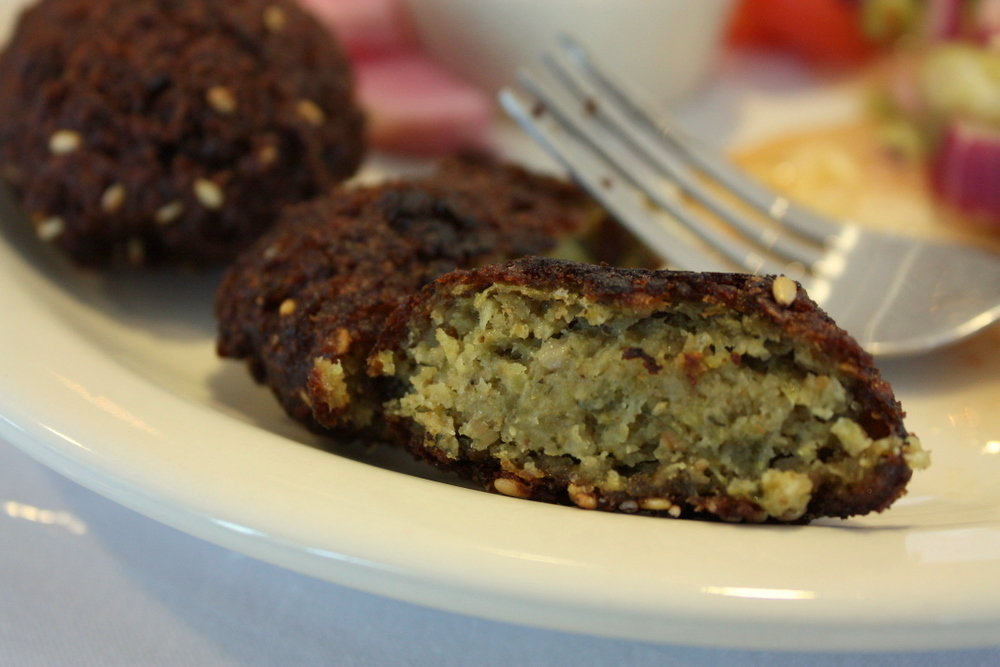

Egyptian falafel is usually made with fava beans, not chick peas, and is a flat patty instead of a lump or ball. It's usually eaten for breakfast with foule.
Discard soaking water and combine fava beans with leek, parsley, cilantro, and salt in a food processor. Blend until you have a smooth paste. You can save this batter in the freezer or cook immediately. When you're ready to cook, add baking soda and mix well. Scoop into 1-2 T portions with a spoon and dip into a mixture of the sesame and coriander seeds. Flaten each portion into a paper towel to make a patty and absorb some excess moisture. Deep fry on medium high heat, using a small frying pan. Don't overcrowd the pan as they cook extremely quickly